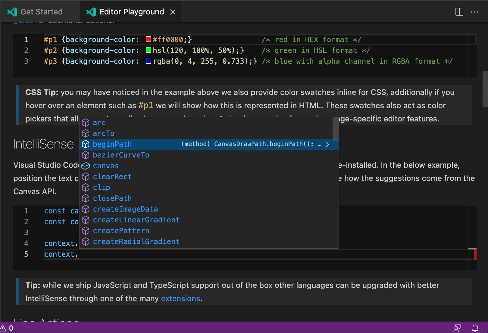
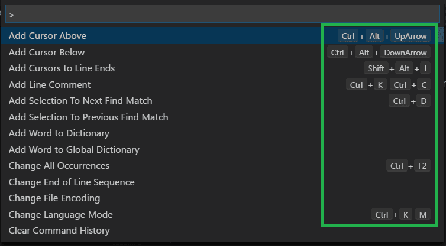
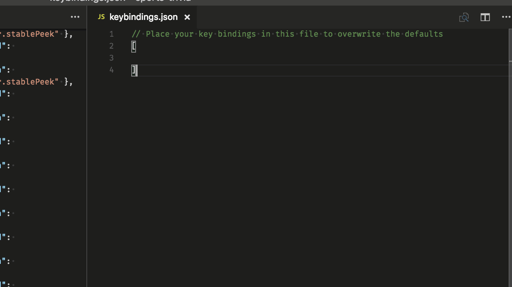
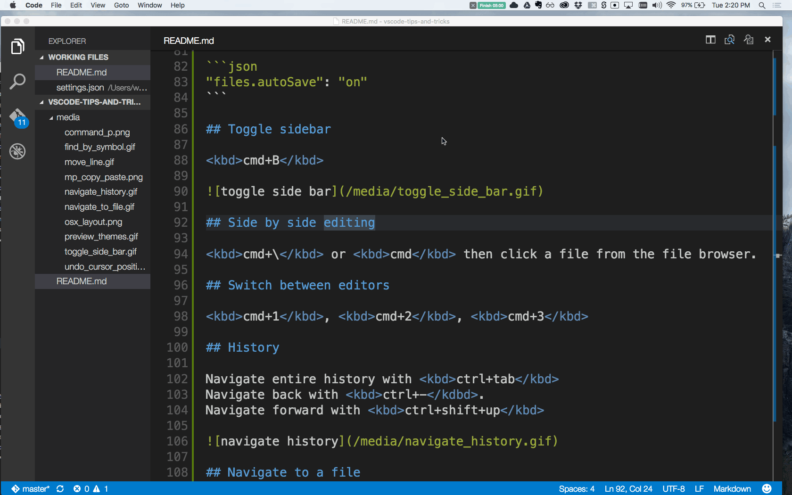
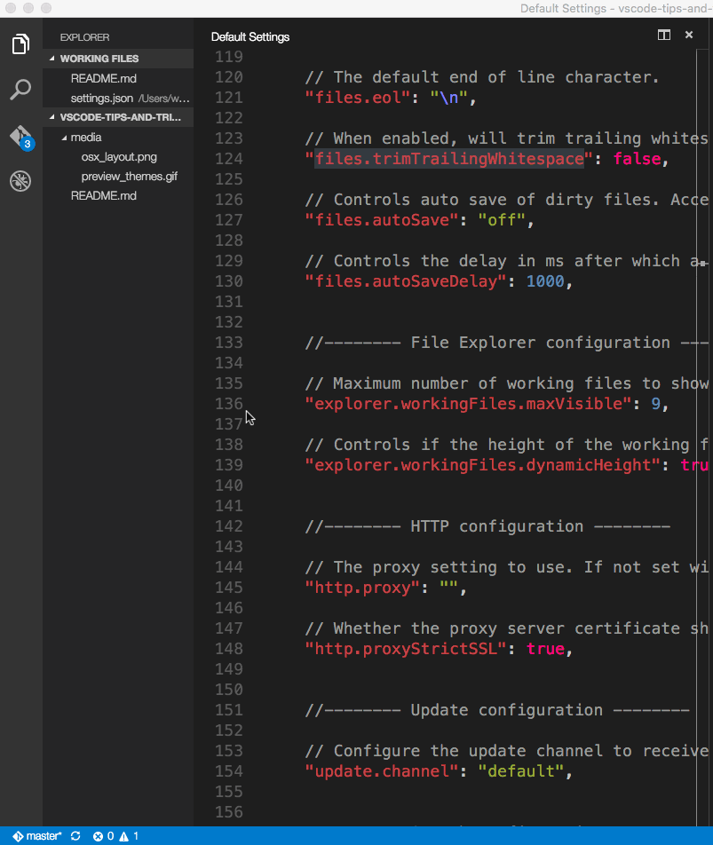
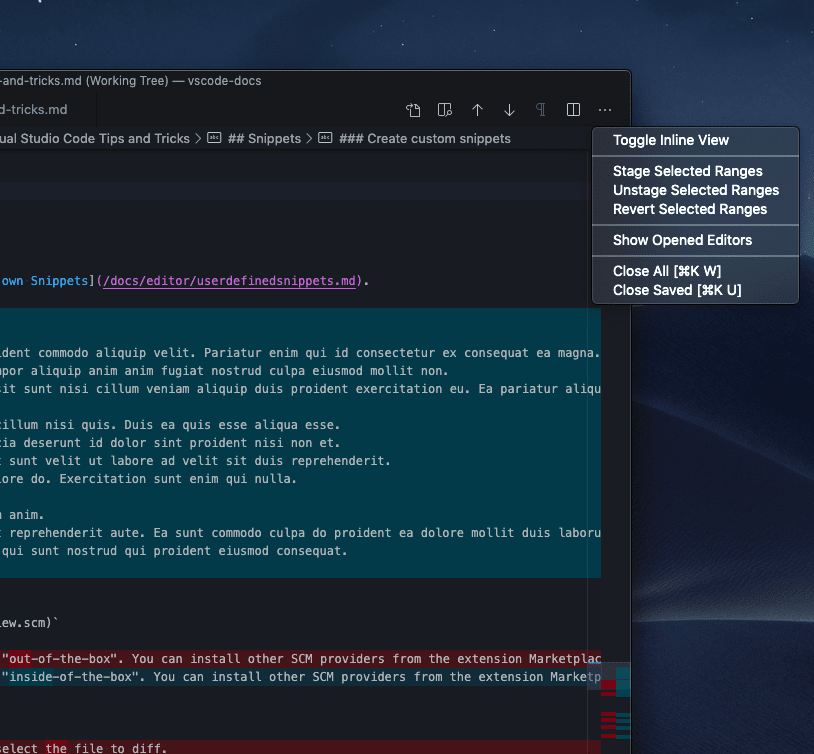

Visual Studio Code Tips and Tricks
"Tips and Tricks" lets you jump right in and learn how to be productive with Visual Studio Code. You'll become familiar with its powerful editing, code intelligence, and source code control features and learn useful keyboard shortcuts. This topic goes pretty fast and provides a broad overview, so be sure to look at the other in-depth topics in Getting Started and the User Guide to learn more.
If you don't have Visual Studio Code installed, go to the Download page. You can find platform specific setup instructions at Running VS Code on Linux, macOS, and Windows.
Prefer a video? You can watch a recent Microsoft Build talk Visual Studio Code tips and tricks, which describes 20 tips and tricks for working productively with VS Code.
Basics
Getting started
The best way of exploring VS Code hands-on is to open the Get Started page. You will get an overview of VS Code's customizations and features. Help > Get Started.

Pick a Walkthrough for a self-guided tour through the setup steps, features, and deeper customizations that VS Code offers. As you discover and learn, the walkthroughs track your progress.
If you are looking to improve your code editing skills open the Interactive Editor Playground. Try out VS Code's code editing features, like multi-cursor editing, IntelliSense, Snippets, Emmet, and many more. Help > Editor Playground.

Command Palette
Access all available commands based on your current context.
Keyboard Shortcut: P (Windows, Linux Ctrl+Shift+P)

Default keyboard shortcuts
All of the commands are in the Command Palette with the associated key binding (if it exists). If you forget a keyboard shortcut, use the Command Palette to help you out.

Keyboard reference sheets
Download the keyboard shortcut reference sheet for your platform (macOS, Windows, Linux).

Quick Open
Quickly open files.
Keyboard Shortcut: P (Windows, Linux Ctrl+P)

Tip: Type ? to view commands suggestions.

Typing commands such as edt and term followed by a space will bring up dropdown lists.

Navigate between recently opened files
Repeat the Quick Open keyboard shortcut to cycle quickly between recently opened files.
Open multiple files from Quick Open
You can open multiple files from Quick Open by pressing the Right arrow key. This will open the currently selected file in the background and you can continue selecting files from Quick Open.
Navigate between recently opened folders and workspaces
Open Recent
Keyboard Shortcut: R (Windows, Linux Ctrl+R)
Displays a Quick Pick dropdown with the list from File > Open Recent with recently opened folders and workspaces followed by files.
Command line
VS Code has a powerful command line interface (CLI) which allows you to customize how the editor is launched to support various scenarios.
Make sure the VS Code binary is on your path so you can simply type 'code' to launch VS Code. See the platform specific setup topics if VS Code is added to your environment path during installation (Running VS Code on Linux, macOS, Windows).
# open code with current directory
code .
# open the current directory in the most recently used code window
code -r .
# create a new window
code -n
# change the language
code --locale=es
# open diff editor
code --diff <file1> <file2>
# open file at specific line and column <file:line[:character]>
code --goto package.json:10:5
# see help options
code --help
# disable all extensions
code --disable-extensions .
.vscode folder
Workspace specific files are in a .vscode folder at the root. For example, tasks.json for the Task Runner and launch.json for the debugger.
Status Bar
Errors and warnings
Keyboard Shortcut: M (Windows, Linux Ctrl+Shift+M)
Quickly jump to errors and warnings in the project.
Cycle through errors with F8 or F8 (Windows, Linux Shift+F8)

You can filter problems either by type ('errors', 'warnings') or text matching.
Change language mode
Keyboard Shortcut: K M (Windows, Linux Ctrl+K M)

If you want to persist the new language mode for that file type, you can use the Configure File Association for command to associate the current file extension with an installed language.
Customization
There are many things you can do to customize VS Code.
- Change your theme
- Change your keyboard shortcuts
- Tune your settings
- Add JSON validation
- Create snippets
- Install extensions
Change your theme
Keyboard Shortcut: K T (Windows, Linux Ctrl+K Ctrl+T)
You can install more themes from the VS Code extension Marketplace.

Additionally, you can install and change your File Icon themes.

Keymaps
Are you used to keyboard shortcuts from another editor? You can install a Keymap extension that brings the keyboard shortcuts from your favorite editor to VS Code. Go to Preferences > Migrate Keyboard Shortcuts from... to see the current list on the Marketplace. Some of the more popular ones:
- Vim
- Sublime Text Keymap
- Emacs Keymap
- Atom Keymap
- Brackets Keymap
- Eclipse Keymap
- Visual Studio Keymap
Customize your keyboard shortcuts
Keyboard Shortcut: K S (Windows, Linux Ctrl+K Ctrl+S)

You can search for shortcuts and add your own keybindings to the keybindings.json file.

See more in Key Bindings for Visual Studio Code.
Tune your settings
By default VS Code shows the Settings editor, you can find settings listed below in a search bar, but you can still edit the underlying settings.json file by using the Open Settings (JSON) command or by changing your default settings editor with the workbench.settings.editor setting.
Open User Settings settings.json
Keyboard Shortcut: , (Windows, Linux Ctrl+,)
Change the font size of various UI elements
// Main editor
"editor.fontSize": 18,
// Terminal panel
"terminal.integrated.fontSize": 14,
// Output panel
"[Log]": {
"editor.fontSize": 15
}
Change the zoom level
"window.zoomLevel": 5
Font ligatures
"editor.fontFamily": "Fira Code",
"editor.fontLigatures": true
Tip: You will need to have a font installed that supports font ligatures. FiraCode is a popular font on the VS Code team.

Auto Save
"files.autoSave": "afterDelay"
You can also toggle Auto Save from the top-level menu with the File > Auto Save.
Format on save
"editor.formatOnSave": true
Format on paste
"editor.formatOnPaste": true
Change the size of Tab characters
"editor.tabSize": 4
Spaces or Tabs
"editor.insertSpaces": true
Render whitespace
"editor.renderWhitespace": "all"
Whitespace characters are rendered by default in text selection.
Ignore files / folders
Removes these files / folders from your editor window.
"files.exclude": {
"somefolder/": true,
"somefile": true
}
Remove these files / folders from search results.
"search.exclude": {
"someFolder/": true,
"somefile": true
}
And many, many other customizations.
Language specific settings
You can scope the settings that you only want for specific languages by the language identifier. You can find a list of commonly used language IDs in the Language Identifiers reference.
"[languageid]": {
}
Tip: You can also create language specific settings with the Configure Language Specific Settings command.

Add JSON validation
Enabled by default for many file types. Create your own schema and validation in settings.json
"json.schemas": [
{
"fileMatch": [
"/bower.json"
],
"url": "https://json.schemastore.org/bower"
}
]
or for a schema defined in your workspace
"json.schemas": [
{
"fileMatch": [
"/foo.json"
],
"url": "./myschema.json"
}
]
or a custom schema
"json.schemas": [
{
"fileMatch": [
"/.myconfig"
],
"schema": {
"type": "object",
"properties": {
"name" : {
"type": "string",
"description": "The name of the entry"
}
}
}
}
]
See more in the JSON documentation.
Extensions
Keyboard Shortcut: X (Windows, Linux Ctrl+Shift+X)
Find extensions
- In the VS Code Marketplace.
- Search inside VS Code in the Extensions view.
- View extension recommendations
- Community curated extension lists, such as awesome-vscode.
Install extensions
In the Extensions view, you can search via the search bar or click the More Actions (...) button to filter and sort by install count.

Extension recommendations
In the Extensions view, click Show Recommended Extensions in the More Actions (...) button menu.

Creating my own extension
Are you interested in creating your own extension? You can learn how to do this in the Extension API documentation, specifically check out the documentation on contribution points.
- configuration
- commands
- keybindings
- languages
- debuggers
- grammars
- themes
- snippets
- jsonValidation
Files and folders
Integrated Terminal
Keyboard Shortcut: ` (Windows, Linux Ctrl+`)

Further reading:
- Integrated Terminal documentation
- Mastering VS Code's Terminal article
Toggle Sidebar
Keyboard Shortcut: B (Windows, Linux Ctrl+B)

Toggle Panel
Keyboard Shortcut: J (Windows, Linux Ctrl+J)
Zen mode
Keyboard Shortcut: K Z (Windows, Linux Ctrl+K Z)

Enter distraction free Zen mode.
Press Esc twice to exit Zen Mode.
Side by side editing
Keyboard Shortcut: \ (Windows, Linux Ctrl+\)
You can also drag and drop editors to create new editor groups and move editors between groups.

Switch between editors
Keyboard Shortcut: 1 (Windows, Linux Ctrl+1), 2 (Windows, Linux Ctrl+2), 3 (Windows, Linux Ctrl+3)

Move to Explorer window
Keyboard Shortcut: E (Windows, Linux Ctrl+Shift+E)
Create or open a file
Keyboard Shortcut: Ctrl+click (Cmd+click on macOS)
You can quickly open a file or image or create a new file by moving the cursor to the file link and using Ctrl+click.

Close the currently opened folder
Keyboard Shortcut: K F (Windows, Linux Ctrl+K F)
Navigation history
Navigate entire history: Tab (Windows, Linux Ctrl+Tab)
Navigate back: - (Windows Alt+Left, Linux Ctrl+Alt+-)
Navigate forward: - (Windows Alt+Right, Linux Ctrl+Shift+-)

File associations
Create language associations for files that aren't detected correctly. For example, many configuration files with custom file extensions are actually JSON.
"files.associations": {
".database": "json"
}
Preventing dirty writes
VS Code will show you an error message when you try to save a file that cannot be saved because it has changed on disk. VS Code blocks saving the file to prevent overwriting changes that have been made outside of the editor.
In order to resolve the save conflict, click the Compare action in the error message to open a diff editor that will show you the contents of the file on disk (to the left) compared to the contents in VS Code (on the right):

Use the actions in the editor toolbar to resolve the save conflict. You can either Accept your changes and thereby overwriting any changes on disk, or Revert to the version on disk. Reverting means that your changes will be lost.
Note: The file will remain dirty and cannot be saved until you pick one of the two actions to resolve the conflict.
Editing hacks
Here is a selection of common features for editing code. If the keyboard shortcuts aren't comfortable for you, consider installing a keymap extension for your old editor.
Tip: You can see recommended keymap extensions in the Extensions view by filtering the search to @recommended:keymaps.
Multi cursor selection
To add cursors at arbitrary positions, select a position with your mouse and use Alt+Click (Option+Click on macOS).
To set cursors above or below the current position use:
Keyboard Shortcut: (Windows Ctrl+Alt+Up, Linux Shift+Alt+Up) or (Windows Ctrl+Alt+Down, Linux Shift+Alt+Down)

You can add additional cursors to all occurrences of the current selection with L (Windows, Linux Ctrl+Shift+L).

Note: You can also change the modifier to Ctrl/Cmd for applying multiple cursors with the
editor.multiCursorModifiersetting . See Multi-cursor Modifier for details.
If you do not want to add all occurrences of the current selection, you can use D (Windows, Linux Ctrl+D) instead. This only selects the next occurrence after the one you selected so you can add selections one by one.

Column (box) selection
You can select blocks of text by holding Shift+Alt (Shift+Option on macOS) while you drag your mouse. A separate cursor will be added to the end of each selected line.

You can also use keyboard shortcuts to trigger column selection.
Vertical rulers
You can add vertical column rulers to the editor with the editor.rulers setting, which takes an array of column character positions where you'd like vertical rulers.
{
"editor.rulers": [20, 40, 60]
}

Fast scrolling
Pressing the Alt key enables fast scrolling in the editor and Explorers. By default, fast scrolling uses a 5X speed multiplier but you can control the multiplier with the Editor: Fast Scroll Sensitivity (editor.fastScrollSensitivity) setting.
Copy line up / down
Keyboard Shortcut: (Windows Shift+Alt+Up, Linux Ctrl+Shift+Alt+Up) or (Windows Shift+Alt+Down, Linux Ctrl+Shift+Alt+Down)
The commands Copy Line Up/Down are unbound on Linux because the VS Code default keybindings would conflict with Ubuntu keybindings, see Issue #509. You can still set the commands
editor.action.copyLinesUpActionandeditor.action.copyLinesDownActionto your own preferred keyboard shortcuts.

Move line up and down
Keyboard Shortcut: (Windows, Linux Alt+Up) or (Windows, Linux Alt+Down)

Shrink / expand selection
Keyboard Shortcut: (Windows, Linux Shift+Alt+Left) or (Windows, Linux Shift+Alt+Right)

You can learn more in the Basic Editing documentation.
Go to Symbol in File
Keyboard Shortcut: O (Windows, Linux Ctrl+Shift+O)

You can group the symbols by kind by adding a colon, @:.

Go to Symbol in Workspace
Keyboard Shortcut: T (Windows, Linux Ctrl+T)

Outline view
The Outline view in the File Explorer (default collapsed at the bottom) shows you the symbols of the currently open file.

You can sort by symbol name, category, and position in the file and allows quick navigation to symbol locations.
Navigate to a specific line
Keyboard Shortcut: G (Windows, Linux Ctrl+G)
Undo cursor position
Keyboard Shortcut: U (Windows, Linux Ctrl+U)
Trim trailing whitespace
Keyboard Shortcut: K X (Windows, Linux Ctrl+K Ctrl+X)

Transform text commands
You can change selected text to uppercase, lowercase, and title case with the Transform commands from the Command Palette.

Code formatting
Currently selected source code: K F (Windows, Linux Ctrl+K Ctrl+F)
Whole document format: F (Windows Shift+Alt+F, Linux Ctrl+Shift+I)

Code folding
Keyboard Shortcut: [ (Windows, Linux Ctrl+Shift+[) and ] (Windows, Linux Ctrl+Shift+])

You can also fold/unfold all regions in the editor with Fold All (K 0 (Windows, Linux Ctrl+K Ctrl+0)) and Unfold All (K J (Windows, Linux Ctrl+K Ctrl+J)).
You can fold all block comments with Fold All Block Comments (K / (Windows, Linux Ctrl+K Ctrl+/)).
Select current line
Keyboard Shortcut: L (Windows, Linux Ctrl+L)
Navigate to beginning and end of file
Keyboard Shortcut: (Windows, Linux Ctrl+Home) and (Windows, Linux Ctrl+End)
Open Markdown preview
In a Markdown file, use
Keyboard Shortcut: V (Windows, Linux Ctrl+Shift+V)
Side by side Markdown edit and preview
In a Markdown file, use
Keyboard Shortcut: K V (Windows, Linux Ctrl+K V)
The preview and editor will synchronize with your scrolling in either view.

IntelliSense
Space (Windows, Linux Ctrl+Space) to trigger the Suggestions widget.

You can view available methods, parameter hints, short documentation, etc.
Peek
Select a symbol then type F12 (Windows Alt+F12, Linux Ctrl+Shift+F10). Alternatively, you can use the context menu.
Go to Definition
Select a symbol then type F12. Alternatively, you can use the context menu or Ctrl+click (Cmd+click on macOS).

You can go back to your previous location with the Go > Back command or - (Windows Alt+Left, Linux Ctrl+Alt+-).
You can also see the type definition if you press Ctrl (Cmd on macOS) when you are hovering over the type.
Go to References
Select a symbol then type F12 (Windows, Linux Shift+F12). Alternatively, you can use the context menu.

Find All References view
Select a symbol then type F12 (Windows, Linux Shift+Alt+F12) to open the References view showing all your file's symbols in a dedicated view.
Rename Symbol
Select a symbol then type F2. Alternatively, you can use the context menu.

Search and modify
Besides searching and replacing expressions, you can also search and reuse parts of what was matched, using regular expressions with capturing groups. Enable regular expressions in the search box by clicking the Use Regular Expression .* button (R (Windows, Linux Alt+R)) and then write a regular expression and use parenthesis to define groups. You can then reuse the content matched in each group by using $1, $2, etc. in the Replace field.

.eslintrc.json
Install the ESLint extension. Configure your linter however you'd like. Consult the ESLint specification for details on its linting rules and options.
Here is configuration to use ES6.
{
"env": {
"browser": true,
"commonjs": true,
"es6": true,
"node": true
},
"parserOptions": {
"ecmaVersion": 6,
"sourceType": "module",
"ecmaFeatures": {
"jsx": true,
"classes": true,
"defaultParams": true
}
},
"rules": {
"no-const-assign": 1,
"no-extra-semi": 0,
"semi": 0,
"no-fallthrough": 0,
"no-empty": 0,
"no-mixed-spaces-and-tabs": 0,
"no-redeclare": 0,
"no-this-before-super": 1,
"no-undef": 1,
"no-unreachable": 1,
"no-use-before-define": 0,
"constructor-super": 1,
"curly": 0,
"eqeqeq": 0,
"func-names": 0,
"valid-typeof": 1
}
}
package.json
See IntelliSense for your package.json file.

Emmet syntax

Snippets
Create custom snippets
File > Preferences > User Snippets (Code > Preferences > User Snippets on macOS), select the language, and create a snippet.
"create component": {
"prefix": "component",
"body": [
"class $1 extends React.Component {",
"",
"\trender() {",
"\t\treturn ($2);",
"\t}",
"",
"}"
]
},
See more details in Creating your own Snippets.
Git integration
Keyboard Shortcut: G (Windows, Linux Ctrl+Shift+G)
Git integration comes with VS Code "out-of-the-box". You can install other SCM providers from the Extension Marketplace. This section describes the Git integration but much of the UI and gestures are shared by other SCM providers.
Diffs
From the Source Control view, select a file to open the diff.

Alternatively, click the Open Changes button in the top right corner to diff the current open file.
Views
The default view for diffs is the side by side view.
Toggle inline view by clicking the More Actions (...) button in the top right and selecting Toggle Inline View.

If you prefer the inline view, you can set "diffEditor.renderSideBySide": false.
Review pane
Navigate through diffs with F7 and F7 (Windows, Linux Shift+F7). This will present them in a unified patch format. Lines can be navigated with arrow keys and pressing Enter will jump back in the diff editor and the selected line.
Edit pending changes
You can make edits directly in the pending changes of the diff view.
Branches
Easily switch between Git branches via the Status Bar.

Staging
Stage file changes
Hover over the number of files and click the plus button.
Click the minus button to unstage changes.

Stage selected
Stage a portion of a file by selecting that file (using the arrows) and then choosing Stage Selected Ranges from the Command Palette.
Undo last commit
Click the (...) button and then select Undo Last Commit to undo the previous commit. The changes are added to the Staged Changes section.

See Git output
VS Code makes it easy to see what Git commands are actually running. This is helpful when learning Git or debugging a difficult source control issue.
Use the Toggle Output command (U (Windows Ctrl+Shift+U, Linux Ctrl+K Ctrl+H)) and select Git in the dropdown.
Gutter indicators
View diff decorations in editor. See documentation for more details.

Resolve merge conflicts
During a merge, go to the Source Control view (G (Windows, Linux Ctrl+Shift+G)) and make changes in the diff view.
You can resolve merge conflicts with the inline CodeLens which lets you Accept Current Change, Accept Incoming Change, Accept Both Changes, and Compare Changes.
Set VS Code as default merge tool
git config --global merge.tool vscode
git config --global mergetool.vscode.cmd 'code --wait $MERGED'
Set VS Code as default diff tool
git config --global diff.tool vscode
git config --global difftool.vscode.cmd 'code --wait --diff $LOCAL $REMOTE'
Debugging
Configure debugger
From the Run and Debug view (D (Windows, Linux Ctrl+Shift+D)), select create a launch.json file, which will prompt you to select the environment that matches your project (Node.js, Python, C++, etc). This will generate a launch.json file. Node.js support is built-in and other environments require installing the appropriate language extensions. See the debugging documentation for more details.

Breakpoints and stepping through
Place breakpoints next to the line number. Navigate forward with the Debug widget.

Data inspection
Inspect variables in the Run panels and in the console.

Logpoints
Logpoints act much like breakpoints but instead of halting the debugger when they are hit, they log a message to the console. Logpoints are especially useful for injecting logging while debugging production servers that cannot be modified or paused.
Add a logpoint with the Add Logpoint command in the left editor gutter and it will be displayed as a "diamond" shaped icon. Log messages are plain text but can include expressions to be evaluated within curly braces ('{}').

Task runner
Auto detect tasks
Select Terminal from the top-level menu, run the command Configure Tasks, then select the type of task you'd like to run.
This will generate a tasks.json file with content like the following. See the Tasks documentation for more details.
{
// See https://go.microsoft.com/fwlink/?LinkId=733558
// for the documentation about the tasks.json format
"version": "2.0.0",
"tasks": [
{
"type": "npm",
"script": "install",
"group": {
"kind": "build",
"isDefault": true
}
}
]
}
There are occasionally issues with auto generation. Check out the documentation for getting things to work properly.
Run tasks from the Terminal menu
Select Terminal from the top-level menu, run the command Run Task, and select the task you want to run. Terminate the running task by running the command Terminate Task

Define keyboard shortcuts for tasks
You can define a keyboard shortcut for any task. From the Command Palette (P (Windows, Linux Ctrl+Shift+P)), select Preferences: Open Keyboard Shortcuts File, bind the desired shortcut to the workbench.action.tasks.runTask command, and define the Task as args.
For example, to bind Ctrl+H to the Run tests task, add the following:
{
"key": "ctrl+h",
"command": "workbench.action.tasks.runTask",
"args": "Run tests"
}
Run npm scripts as tasks from the Explorer
From the explorer you can open a script in the editor, run it as a task, and launch it with the node debugger (when the script defines a debug option like --inspect-brk). The default action on click is to open the script. To run a script on a single click, set npm.scriptExplorerAction to "run". Use the setting npm.exclude to exclude scripts in package.json files contained in particular folders.
With the setting npm.enableRunFromFolder, you can enable to run npm scripts from the File Explorer's context menu for a folder. The setting enables the command Run NPM Script in Folder... when a folder is selected. The command shows a Quick Pick list of the npm scripts contained in this folder and you can select the script to be executed as a task.
Portable mode
VS Code has a Portable mode which lets you keep settings and data in the same location as your installation, for example, on a USB drive.
Insiders builds
The Visual Studio Code team uses the Insiders version to test the latest features and bug fixes of VS Code. You can also use the Insiders version by downloading it here.
- For Early Adopters - Insiders has the most recent code changes for users and extension authors to try out.
- Frequent Builds - New builds every day with the latest bug fixes and features.
- Side-by-side install - Insiders installs next to the Stable build allowing you to use either independently.